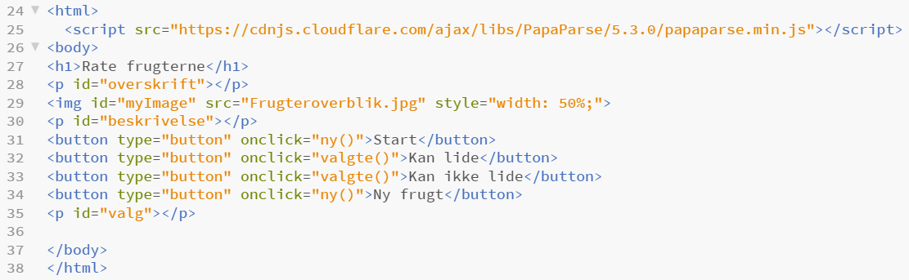
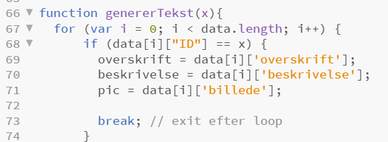

I dette forløb har vi arbejdet med databaser og implementeret dem i en simpel version på vores hjemmesider.
Link til hjemmeside med implementeret database:
Rate frugterne
Hvad er en database?:
En database er en organiseret samling af data. Databaser består typisk af tabeller, kolonner og rækker, der knytter data til hinanden i relationer. Vi implemeterer databasen med javascript, der har til formål at gøre hjemmesiden interaktiv/dynamisk. Det er altså denne del, der sørger for, at vi kan trykke på en knap og få information fra databasen frem på hjemmesiden.
Det er vigtigt at normalisere en databse efter følgende normaliseringsregler:
- Unik primærnøgle.
- Ingen kolonne må være afhængig af andre kolonner end primærnøglen.
- Der må kun være én datatype i hver kolonne.
- Det samme data skal kun forekomme et sted - det modsatte kaldes redundans.
- Data skal være relateret til hinanden.
Krav til hjemmeside/database:
- En html brugerflade hvor der er overvejt brugervenligheden, se teorien her interaktionsdesign.
- Data skal organiseres i en simpel database, regneark, som kan importeres som csv fil med javascript.
- Der skal redegøres for hvordan databasen kan normaliseres ved at gøre den til en relatinel database.
Vores hjemmeside/database:
Vi har lavet en database med frugter, billeder af frugter og et funfact om den pågældende frugt.
Når billedet af frugten kommer frem på hjemmesiden, skal man kunne klikke på en knap og derved skal der komme et funfact om frugten op.
Gennemgang af relevante kodestumper:
Herunder ses et udklip af koden. I linje 25 bruger vi koden script. For at kunne holde styr på data bruger vi biblioteket Papa som kan loades med denne kommando script src="https://cdnjs.cloudflare.com/ajax/libs/PapaParse/5.3.0/papaparse.min.js">
I linje 31, 32, 33 og 34 laves knapperne og linje 28, 30, 35 henviser til databasen.

Kode 2:

Her ses en anden del af koden. Linje 67 giver en løkke hvor i=0 til at starte med, og i vokser med 1 ì++ for hver omgang. Løkken kører så længe at i < data.length altså så længe i er mindre end antallet af rækker i data. Betingelsen if (data[i]["ID"] == x) i linje 68 bruger primærnøglen ÌD og spørger om den er lig med x. Hvis den er det så skal overskrift og beskrivelse opdateres og løkken stoppes.